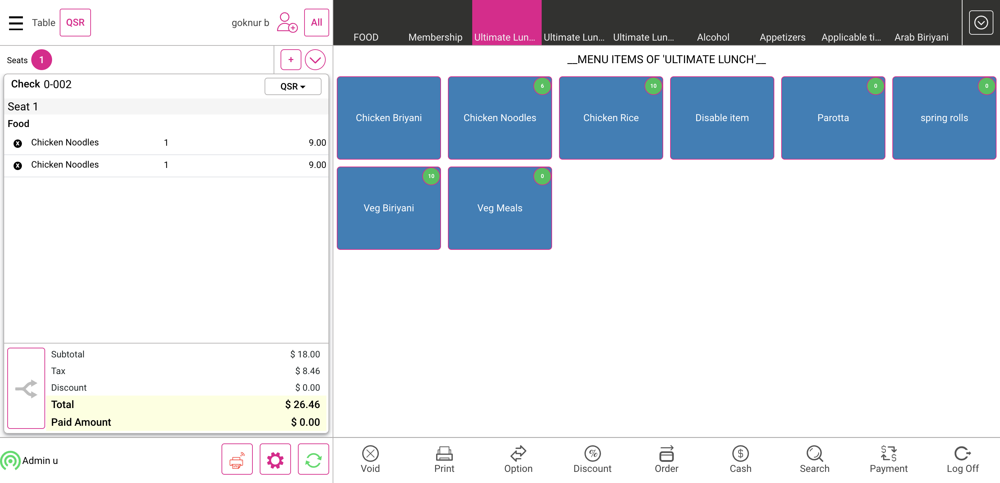

-
Verify the eighty six list
3:30:28 am / 00:18:29:589 Fail
Verify the eighty six list
01.13.2024 3:30:28 am 01.13.2024 3:48:58 am 00:18:29:589 · #test-id=1Passverify the 86 list will be displayed on the top of the login screenPassverify the 86 list will be displayed on the top of the login screenGiven I click 86List button in the login screenThen I should verify the "86 List" in the eighty six list popup "verify the 86 list popup"And I search the menu item as "Chicken Biriyani" on the 86 list screenThen I should verify the "Chicken Biriyani" in the search list "verify the menu item"And I click search close on the 86 list screenAnd I search the menu item as "Idly" on the 86 list screenThen I should verify Eighty six list disable menu item are not displayed in the login screen eighty six listAnd I search the menu item as "Poori" on the 86 list screenThen I should verify Eighty six list disable menu item are not displayed in the login screen eighty six listThen I should verify the quantity button in login screen is not enabled "verfiy the qty button is eneble or not"And I search the menu item as "Chicken Biriyani" on the 86 list screenThen I should verify the "Chicken Biriyani" in the search list "verify the menu item"And I click close button in the eighty six list popupPassVerify application allows to Enter the Qty directly for input field update.PassVerify application allows to Enter the Qty directly for input field update.Given I enter the Pin number for loginAnd I click the operation button in the login screenAnd I click the 86 list button in the operation screenAnd I click on the search field "Chicken Biriyani" for searching the menu item "search menu item "Then I should verify the "Chicken Biriyani" in the search list "verify the menu item"Then I should verify that quantity is displayed "Verify Quantity"And I click the quantity txt field in the eighty six list popup "click qty txt field"And I enter the percentage2 as "12"And I click close button in the eighty six list popup1And I click on the search field "Chicken Biriyani" for searching the menu item "search menu item "Then I verify the quantity value as "12" "Verify Quantity"And I click the Toggle Icon buttonAnd I click POS Icon from ToggleAnd I closed the order type windowAnd I click the Settings buttonAnd I click the 86 list button in the operation screenAnd I click on the search field "Chicken Biriyani" for searching the menu item "search menu item "Then I verify the quantity value as "12" "Verify Quantity"And I click power button1Given I click 86List button in the login screenThen I should verify the "86 List" in the eighty six list popup "verify the 86 list popup"And I search the menu item as "Chicken Biriyani" on the 86 list screenThen I verify the quantity value as "12" "Verify Quantity"And I click close button in the eighty six list popupPassVerify multiple menu's applied qty in '86 List' Operation screen & Changes in 86 List of Login screen,Verify edited menu's qty in '86 List' Operation screen & Changes in 86 List of Login screen..PassVerify multiple menu's applied qty in '86 List' Operation screen & Changes in 86 List of Login screen,Verify edited menu's qty in '86 List' Operation screen & Changes in 86 List of Login screen..Given I enter clock in pinAnd I click the operation button in the login screenAnd I click the 86 list button in the operation screenAnd I click on the search field "Chicken Biriyani" for searching the menu item "search menu item "Then I should verify the "Chicken Biriyani" in the search list "verify the menu item"Then I should verify that quantity is displayed "Verify Quantity"And I click the quantity txt field in the eighty six list popup "click qty txt field"And I enter the percentage2 as "12"And I click close button in the eighty six list popup1And I click on the search field "Chicken Biriyani" for searching the menu item "search menu item "Then I verify the quantity value as "12" "Verify Quantity"And I click close button in the eighty six list popup1And I click on the search field "Chicken Noodles" for searching the menu item "search menu item "Then I should verify the "Chicken Noodles" in the search list "verify the menu item"Then I should verify that quantity is displayed "Verify Quantity"And I click the quantity txt field in the eighty six list popup "click qty txt field"And I enter the percentage2 as "12"And I click close button in the eighty six list popup1And I click on the search field "Chicken Noodles" for searching the menu item "search menu item "Then I verify the quantity value as "12" "Verify Quantity"And I click power button1Given I click 86List button in the login screenAnd I search the menu item as "Chicken Biriyani" on the 86 list screenThen I verify the quantity value as "12" "Verify Quantity"And I click search close on the 86 list screenWhen I search the menu item as "Chicken Noodles" on the 86 list screenThen I should verify the "Chicken Noodles" in the search list "verify the menu item"Then I verify the quantity value as "12" "Verify Quantity"And I click close button in the eighty six list popupPassVerify Newly added menu item is available in 86 List in POS login screen and Operation ScreenPassVerify Newly added menu item is available in 86 List in POS login screen and Operation ScreenGiven I click 86List button in the login screenWhen I search the menu item as "Chicken Biriyani" on the 86 list screenThen I should verify the "Chicken Biriyani" in the search list "verify the menu item"And I click search close on the 86 list screenWhen I search the menu item as "Chicken Noodles" on the 86 list screenThen I should verify the "Chicken Noodles" in the search list "verify the menu item"And I click search close on the 86 list screenWhen I search the menu item as "Idly" on the 86 list screenThen I should verify Eighty six list disable menu item as "Idly" are not displayed in the login screen eighty six listAnd I click close button in the eighty six list popupAnd I enter the Pin number for loginAnd I click the operation button in the login screenAnd I click 86List button in the operation windowAnd I click on the search field "Chicken Biriyani" for searching the menu item "search menu item "Then I should verify the "Chicken Biriyani" in the search list "verify the menu item"And I click close button in the eighty six list popup1And I click on the search field "Chicken Noodles" for searching the menu item "search menu item "Then I should verify the "Chicken Noodles" in the search list "verify the menu item"And I click close button in the eighty six list popup1And I click on the search field "Idly" for searching the menu item "search menu item"Then I should verify Eighty six list disable menu item as "Idly" are not displayed in the login screen eighty six list1And I click power button1Failverify the available quantity decreased after ordering menu item in the order screen,Verify available qty is reduced when repeat order through menu option,Verify available qty is reduced when repeat order through Customer Profile screenFailverify the available quantity decreased after ordering menu item in the order screen,Verify available qty is reduced when repeat order through menu option,Verify available qty is reduced when repeat order through Customer Profile screenGiven I enter clock in pinAnd I click the operation button in the login screenAnd I click the 86 list button in the operation screenAnd I click on the search field "Chicken Noodles" for searching the menu item "search menu item"And I click the quantity txt field in the eighty six list popup "click qty txt field"And I enter the percentage2 as "10"And I click the Toggle Icon buttonAnd I click POS Icon from ToggleAnd I closed the order type windowAnd I get check numberAnd I pass menu item as "Chicken Noodles" to searchAnd I select 86 menu item as "Chicken Noodles"And I select category as "Ultimate Lunch"Then I should verify the the quantity "9" is displayed in the order screen is decreased after order placed "Chicken Noodles"And I click menu item as "Chicken Noodles" to see Menu option screenWhen I click Repeat on menu optionThen I should verify the the quantity "8" is displayed in the order screen is decreased after order placed "Chicken Noodles"When I click Add Customer ButtonAnd I search for "goknur bati"When I click "goknur bati" to select customer for the seatAnd I click Payment button in the Order Management ScreenAnd I click cash button from the payment method popupAnd I click Submit button on the Payment WindowAnd I closed the order type windowWhen I click Add Customer ButtonAnd I search for "goknur bati"When I click "goknur bati" to select customer for the seatAnd I click the customer name on the order screenThen I should see the customer profile windowWhen I select the "Chicken Noodles" in the customer field "Select Chicken Rice"And I click repeat Order button on the customer profile windowThen I Should get back to the Order ScreenThen I should verify the the quantity "7" is displayed in the order screen is decreased after order placed "Chicken Noodles"And I click Payment button in the Order Management ScreenStep skippedAnd I click cash button from the payment method popupStep skippedAnd I click Submit button on the Payment WindowStep skippedAnd I closed the order type windowStep skippedAnd I select category as "Ultimate Lunch"Step skippedAnd I select menu item as "Chicken Noodles"Step skippedThen I should verify the the quantity "6" is displayed in the order screen is decreased after order placed "Chicken Noodles"Step skippedGiven User select QSR mode on menu item pageStep skippedWhen User select DineIn modeStep skippedAnd I select table as "T5"Step skippedAnd I select category as "Ultimate Lunch"Step skippedThen I should verify the the quantity "6" is displayed in the order screen is decreased after order placed "Chicken Noodles"Step skippedAnd I select category as "Ultimate Lunch"Step skippedThen I should verify the the quantity "6" is displayed in the order screen is decreased after order placed "Chicken Noodles"Step skippedAnd I select category as "Ultimate Lunch"Step skippedAnd I select menu item as "Chicken Noodles"Step skippedAnd I select category as "Ultimate Lunch"Step skippedThen I should verify the the quantity "5" is displayed in the order screen is decreased after order placed "Chicken Noodles"Step skippedAnd I click Payment button in the Order Management ScreenStep skippedAnd I click cash button from the payment method popupStep skippedAnd I click Submit button on the Payment WindowStep skippedAnd I click power buttonStep skippedcom.qa.stepdef.Hooks.quit(io.cucumber.java.Scenario)screenshotPassverify the available quantity reverted when place menu item and void it before send to the kitchenPassverify the available quantity reverted when place menu item and void it before send to the kitchenGiven I enter clock in pinAnd I click the operation button in the login screenAnd I click the 86 list button in the operation screenAnd I click on the search field "Veg Biriyani" for searching the menu item "search menu item"And I click the quantity txt field in the eighty six list popup "click qty txt field"And I enter the percentage2 as "10"And I click the Toggle Icon buttonAnd I click POS Icon from ToggleAnd I closed the order type windowAnd I select category as "Ultimate Lunch"And I select menu item as "Veg Biriyani"Then I should verify the the quantity "9" is displayed in the order screen is decreased after order "Veg Biriyani"And I click menu item as "Veg Biriyani" to see Menu option screenAnd I click void item on Menu optionThen I should verify the the quantity "10" is displayed in the order screen reverted after void "Veg Biriyani"And I select category as "Ultimate Lunch"And I select menu item as "Veg Biriyani"And I click Options buttonAnd I click resend to kitchenThen I should verify the the quantity "9" is displayed in the order screen is decreased after order "Veg Biriyani"And I click menu item as "Veg Biriyani" to see Menu option screenAnd I click void item on Menu optionThen I should see the void reason popupAnd I click void Reason on the void popupAnd I click Add Button on the void reason popupAnd I select category as "Ultimate Lunch"Then I should verify the the quantity "10" is displayed in the order screen reverted after void "Veg Biriyani"And I click Void button on order management screenThen I should see the void reason popupAnd I click void Reason on the void popupAnd I click Add Button on the void reason popupAnd I closed the order type windowAnd I click log off button in order screenPassVerify application allows to repeat order up to its maximum qty.PassVerify application allows to repeat order up to its maximum qty.Given I enter clock in pinAnd I click the operation button in the login screenAnd I click the 86 list button in the operation screenAnd I click on the search field "Chicken Rice" for searching the menu item "search menu item "And I click the quantity txt field in the eighty six list popup "click qty txt field"And I enter the percentage2 as "2"And I click the Toggle Icon buttonAnd I click POS Icon from ToggleAnd I closed the order type windowAnd I select category as "Ultimate Lunch"And I select menu item as "Chicken Rice"Then I should verify the the quantity "1" is displayed in the order screen is decreased after order placed "Chicken Rice"And I click menu item as "Chicken Rice" to see Menu option screenWhen I click Repeat on menu optionThen I should verify the the quantity "0" is displayed in the order screen is decreased after order placed "Chicken Rice"And I select menu item as "Chicken Rice"Then I should verify the "Quantity is not enough." in the order screen of eighty six list "Verify Insufficient pop up"And I click Done button on the PopupThen I should see "1" is IncreasedAnd I click "1" from the selected menu item quantity "Click item as Chicken Rice"Then I should verify the "1" is present not "2" in the order screen of added menu item in eighty six "Verify the quantity is not 2"And I click Payment button in the Order Management ScreenThen I click cash button from the payment method popupAnd I click Submit button on the Payment WindowAnd I closed the order type windowAnd I select category as "Ultimate Lunch"Then I should verify the the quantity "0" is displayed in the order screen is decreased after order placed "Chicken Rice"And I click log off button in order screenPassverify the available quantity when reopen the closed check from check statsPassverify the available quantity when reopen the closed check from check statsGiven I enter clock in pinAnd I click the operation button in the login screenAnd I click the 86 list button in the operation screenAnd I click on the search field "Veg Biriyani" for searching the menu item "search menu item"And I click the quantity txt field in the eighty six list popup "click qty txt field"And I enter the percentage2 as "10"And I click the Toggle Icon buttonAnd I click POS Icon from ToggleAnd I closed the order type windowWhen I get check numberAnd I select category as "Ultimate Lunch"And I select menu item as "Veg Biriyani"Then I should verify the the quantity "9" is displayed in the order screen is decreased after order "Veg Biriyani"And I click Payment button in the Order Management ScreenThen I click cash button from the payment method popupAnd I click Submit button on the Payment WindowAnd I closed the order type windowAnd I click AllAnd I click Check Stats tabAnd I click Closed tab on the Check statsAnd I click the Closed check on check statsAnd I click reopen check button on the check stats screenThen I Should get back to the Order ScreenAnd I select category as "Ultimate Lunch"Then I should verify the the quantity "9" is displayed in the order screen is decreased after order "Veg Biriyani"And I click Payment button in the Order Management ScreenAnd I click Submit button on the Payment WindowAnd I closed the order type windowAnd I click log off button in order screenPassverify the available quantity when reopen the closed check and void itemPassverify the available quantity when reopen the closed check and void itemGiven I enter clock in pinAnd I click the operation button in the login screenAnd I click the 86 list button in the operation screenAnd I click on the search field "Veg Biriyani" for searching the menu item "search menu item"And I click the quantity txt field in the eighty six list popup "click qty txt field"And I enter the percentage2 as "10"And I click the Toggle Icon buttonAnd I click POS Icon from ToggleAnd I closed the order type windowWhen I get check numberAnd I select category as "Ultimate Lunch"And I select menu item as "Veg Biriyani"Then I should verify the the quantity "9" is displayed in the order screen is decreased after order "Veg Biriyani"And I click Payment button in the Order Management ScreenThen I click cash button from the payment method popupAnd I click Submit button on the Payment WindowAnd I closed the order type windowAnd I click AllAnd I click Check Stats tabAnd I click Closed tab on the Check statsAnd I click the Closed check on check statsAnd I click reopen check button on the check stats screenAnd I click Payment button in the Order Management ScreenAnd I click payment in the payment windowWhen I click Delete button on the payment windowWhen I click Exit to return to Order Management ScreenAnd I click Void button on order management screenThen I should see the void reason popupAnd I click void Reason on the void popupAnd I click Add Button on the void reason popupAnd I closed the order type windowAnd I select category as "Ultimate Lunch"Then I should verify the the available quantity "10" is displayed in the order screen "Veg Biriyani"And I click log off button in order screenPassverify the available quantity should not reduce again when reopen the closed check and submit it againPassverify the available quantity should not reduce again when reopen the closed check and submit it againGiven I enter clock in pinAnd I click the operation button in the login screenAnd I click the 86 list button in the operation screenAnd I click on the search field "Veg Biriyani" for searching the menu item "search menu item"And I click the quantity txt field in the eighty six list popup "click qty txt field"And I enter the percentage2 as "10"And I click the Toggle Icon buttonAnd I click POS Icon from ToggleAnd I closed the order type windowWhen I get check numberAnd I select category as "Ultimate Lunch"And I select menu item as "Veg Biriyani"Then I should verify the the quantity "9" is displayed in the order screen is decreased after order "Veg Biriyani"And I click Payment button in the Order Management ScreenThen I click cash button from the payment method popupAnd I click Submit button on the Payment WindowAnd I closed the order type windowAnd I click AllAnd I click Closed tab on the Check statsAnd I click the Closed check on check statsAnd I click reopen check button on the check stats screenAnd I click Payment button in the Order Management ScreenAnd I click Submit button on the Payment WindowAnd I closed the order type windowAnd I select category as "Ultimate Lunch"Then I should verify the the quantity "9" remains same when reopen and submit it "Veg Biriyani"When I get check numberAnd I select menu item as "Veg Biriyani"Then I should verify the the quantity "8" is displayed in the order screen is decreased after order "Veg Biriyani"And I click Payment button in the Order Management ScreenThen I click cash button from the payment method popupAnd I click Submit button on the Payment WindowAnd I closed the order type windowAnd I click AllAnd I click Closed tab on the Check statsAnd I click the Closed check on check statsAnd I click reopen check button on the check stats screenAnd I select category as "Ultimate Lunch"Then I should verify the the quantity "8" remains same when reopen and submit it "Veg Biriyani"And I select menu item as "Veg Biriyani"And I click Payment button in the Order Management ScreenThen I click cash button from the payment method popupAnd I click Submit button on the Payment WindowAnd I closed the order type windowAnd I select category as "Ultimate Lunch"Then I should verify the the quantity "7" is displayed in the order screen is decreased after order "Veg Biriyani"And I click log off button in order screenPassverify the available quantity when reopen the closed check and void item and submit itPassverify the available quantity when reopen the closed check and void item and submit itGiven I enter clock in pinAnd I click the operation button in the login screenAnd I click the 86 list button in the operation screenAnd I click on the search field "Veg Biriyani" for searching the menu item "search menu item"And I click the quantity txt field in the eighty six list popup "click qty txt field"And I enter the percentage2 as "10"And I click the Toggle Icon buttonAnd I click POS Icon from ToggleAnd I closed the order type windowWhen I get check numberAnd I select category as "Ultimate Lunch"And I select menu item as "Veg Biriyani"Then I should verify the the quantity "9" is displayed in the order screen is decreased after order "Veg Biriyani"And I click Payment button in the Order Management ScreenThen I click cash button from the payment method popupAnd I click Submit button on the Payment WindowAnd I closed the order type windowAnd I click AllAnd I click Closed tab on the Check statsAnd I click the Closed check on check statsAnd I click reopen check button on the check stats screenAnd I click Payment button in the Order Management ScreenAnd I click payment in the payment windowWhen I click Delete button on the payment windowWhen I click Exit to return to Order Management ScreenAnd I click menu item as "Veg Biriyani" to see Menu option screenAnd I click Void button on order management screenThen I should see the void reason popupAnd I click void Reason on the void popupAnd I click Add Button on the void reason popupAnd I closed the order type windowAnd I select category as "Ultimate Lunch"Then I should verify the the quantity "10" remains same when reopen and submit it "Veg Biriyani"And I click log off button in order screenPassverify the applied quantity displayed on the menu name in order screenPassverify the applied quantity displayed on the menu name in order screenGiven I enter clock in pinAnd I click the operation button in the login screenAnd I click the 86 list button in the operation screenAnd I click on the search field "Veg Biriyani" for searching the menu item "search menu item"And I click the quantity txt field in the eighty six list popup "click qty txt field"And I enter the percentage2 as "10"And I click the Toggle Icon buttonAnd I click POS Icon from ToggleAnd I closed the order type windowAnd I select category as "Ultimate Lunch"Then I should verify the the available quantity "10" is displayed in the order screen "Veg Biriyani"And I click log off button in order screenPassverify the quantity of menu item changes when change the quantity in 86 listPassverify the quantity of menu item changes when change the quantity in 86 listGiven I enter clock in pinAnd I click the operation button in the login screenAnd I click the 86 list button in the operation screenAnd I click on the search field "Veg Biriyani" for searching the menu item "search menu item"And I click the quantity txt field in the eighty six list popup "click qty txt field"And I enter the percentage2 as "10"And I click the Toggle Icon buttonAnd I click POS Icon from ToggleAnd I closed the order type windowAnd I select category as "Ultimate Lunch"Then I should verify the the available quantity "10" is displayed in the order screen "Veg Biriyani"And I click the Settings buttonAnd I click the 86 list button in the operation screenAnd I click on the search field "Veg Biriyani" for searching the menu item "search menu item"And I click the quantity txt field in the eighty six list popup "click qty txt field"And I enter the percentage2 as "12"And I click the Toggle Icon buttonAnd I click POS Icon from ToggleAnd I closed the order type windowAnd I select category as "Ultimate Lunch"Then I should verify the the available quantity "12" is displayed in the order screen "Veg Biriyani"And I click log off button in order screenPassverify the quantity of menu item is reduces in login screen 86 list when place the order and close the salePassverify the quantity of menu item is reduces in login screen 86 list when place the order and close the saleGiven I enter clock in pinAnd I click the operation button in the login screenAnd I click the 86 list button in the operation screenAnd I click on the search field "Veg Biriyani" for searching the menu item "search menu item"And I click the quantity txt field in the eighty six list popup "click qty txt field"And I enter the percentage2 as "10"And I click the Toggle Icon buttonAnd I click POS Icon from ToggleAnd I closed the order type windowAnd I select category as "Ultimate Lunch"Then I should verify the the available quantity "10" is displayed in the order screen "Veg Biriyani"And I select menu item as "Veg Biriyani"And I click Payment button in the Order Management ScreenThen I click cash button from the payment method popupAnd I click Submit button on the Payment WindowAnd I closed the order type windowAnd I select category as "Ultimate Lunch"Then I should verify the the quantity "9" is displayed in the order screen is decreased after order "Veg Biriyani"And I click log off button in order screenGiven I click 86List button in the login screenWhen I search the menu item as "Veg Biriyani" on the 86 list screenThen I should verify the "Veg Biriyani" in the search list "verify the menu item"Then I verify the quantity value as "9" "Verify Quantity"And I click close button in the eighty six list popupPassVerify Qty of menu item is reduces in Login screen 86 List, when place the menu item and click on All.PassVerify Qty of menu item is reduces in Login screen 86 List, when place the menu item and click on All.Given I enter clock in pinAnd I click the operation button in the login screenWhen I click 86List button in the operation windowAnd I click on the search field "Chicken Noodles" for searching the menu item "search menu item"And I click the quantity txt field in the eighty six list popup "click qty txt field"And I enter the percentage2 as "10"And I click the Toggle Icon buttonAnd I click POS Icon from ToggleAnd I closed the order type windowWhen User click QSR on Menu Item pageWhen User select DineIn modeAnd I select the "T2" in the Table layout screen"click T2 table"And I select category as "Ultimate Lunch"And I select menu item as "Chicken Noodles"And I click Finish Order buttonAnd I click Table Layout tabAnd I click power buttonGiven I click 86List button in the login screenWhen I search the menu item as "Chicken Noodles" on the 86 list screenThen I should verify the "Chicken Noodles" in the search list "verify the menu item"Then I verify the quantity value as "9" "Verify Quantity"And I click close button in the eighty six list popupAnd I'm logged inAnd I closed the order type windowAnd I click AllAnd I click Table Layout tabAnd I select the "T2" in the Table layout screen"click T2 table"And I click Void button on order management screenThen I should see the void reason popupAnd I click void Reason on the void popupAnd I click Add Button on the void reason popupAnd I click Table Layout tabAnd I click power buttonPassverify the quantity tool tip is disappear on the menu item in the order screen when disable the 86 list button in BOPassverify the quantity tool tip is disappear on the menu item in the order screen when disable the 86 list button in BOGiven I'm logged inAnd I closed the order type windowAnd I select category as "CIFOOD"Then I should verify the quantity tool tip is disappear in the order screen for Eighty six list disabled menu item "Not Displayed"And I click log off button in order screenPassVerify Qty is appear on the '86 List' menu item in Lite Mode.PassVerify Qty is appear on the '86 List' menu item in Lite Mode.Given I enter the Pin number for loginAnd I click the operation button in the login screenAnd I click the 86 list button in the operation screenAnd I click on the search field "Chicken Noodles" for searching the menu item "search menu item "And I click the quantity txt field in the eighty six list popup "click qty txt field"And I enter the percentage2 as "10"And I click the Toggle Icon buttonAnd I click POS Icon from ToggleAnd I closed the order type windowAnd I select category as "Ultimate Lunch"Then I should verify the the quantity "10" is displayed in the order screen is decreased after order placed "Chicken Noodles"And I click log off button in order screenPassVerify QTY is displays on the menu under display groups.PassVerify QTY is displays on the menu under display groups.Given I enter clock in pinAnd I click the operation button in the login screenAnd I click the 86 list button in the operation screenAnd I click on the search field "Chicken Rice" for searching the menu item "search menu item "And I click the quantity txt field in the eighty six list popup "click qty txt field"And I enter the percentage2 as "10"And I click the Toggle Icon buttonAnd I click POS Icon from ToggleAnd I closed the order type windowAnd I select category as "Ultimate Lunch"Then I should verify the the quantity "10" is displayed in the order screen is decreased after order placed "Chicken Rice"And I click log off button in order screenPassverify the quantity of an item not depends on the serving size of an itemPassverify the quantity of an item not depends on the serving size of an itemGiven I enter clock in pinAnd I click the operation button in the login screenAnd I click the 86 list button in the operation screenAnd I click on the search field "Lemon Juice" for searching the menu item "search menu item"And I click the quantity txt field in the eighty six list popup "click qty txt field"And I enter the percentage2 as "10"And I click the Toggle Icon buttonAnd I click POS Icon from ToggleAnd I closed the order type windowAnd I select category as "DRINKS"Then I should verify the the quantity "10" is displayed in the order screen is decreased after order"Lemon Juice"And I select menu item as "Lemon Juice"Then I should verify the the quantity "9" is displayed not depends on the serving size of an item "Lemon Juice"And I click Void button on order management screenAnd I click Done button on the PopupAnd I click log off button in order screenPassverify the discount free item count in 86 listPassverify the discount free item count in 86 listGiven I enter clock in pinAnd I click the operation button in the login screenAnd I click the 86 list button in the operation screenAnd I click on the search field "Veg Biriyani" for searching the menu item "search menu item"And I click the quantity txt field in the eighty six list popup "click qty txt field"And I enter the percentage2 as "10"And I click the Toggle Icon buttonAnd I click POS Icon from ToggleAnd I closed the order type windowAnd I select category as "Ultimate Lunch"Then I should verify the the free item quantity "10" is displayed in the order screen is decreased after order "Veg Biriyani"And I select menu item as "Veg Biriyani"And I select Discount on the Order screenThen I should see Check Based Discount ScreenAnd I click Discount as "Free Item 86 list"And I click Back button on Discount ScreenThen I should verify the the free item quantity "9" is displayed in the order screen is decreased after order "Veg Biriyani"And I click Void button on order management screenAnd I click Done button on the PopupAnd I click log off button in order screenPassverify the available quantity reverted when void the free item after applied free item discountPassverify the available quantity reverted when void the free item after applied free item discountGiven I enter clock in pinAnd I click the operation button in the login screenAnd I click the 86 list button in the operation screenAnd I click on the search field "Veg Biriyani" for searching the menu item "search menu item"And I click the quantity txt field in the eighty six list popup "click qty txt field"And I enter the percentage2 as "10"And I click the Toggle Icon buttonAnd I click POS Icon from ToggleAnd I closed the order type windowWhen I get check numberAnd I select category as "Ultimate Lunch"Then I should verify the the free item quantity "10" is displayed in the order screen is decreased after order "Veg Biriyani"And I select menu item as "Veg Biriyani"And I select Discount on the Order screenThen I should see Check Based Discount ScreenAnd I click Discount as "Free Item 86 list"And I click Back button on Discount ScreenThen I should verify the the free item quantity "9" is displayed in the order screen is decreased after order "Veg Biriyani"And I click Payment button in the Order Management ScreenThen I click cash button from the payment method popupAnd I click Submit button on the Payment WindowAnd I closed the order type windowAnd I click AllAnd I click Closed tab on the Check statsAnd I click the Closed check on check statsAnd I click reopen check button on the check stats screenAnd I click Payment button in the Order Management ScreenAnd I click payment in the payment windowWhen I click Delete button on the payment windowWhen I click Exit to return to Order Management ScreenAnd I click Void button on order management screenThen I should see the void reason popupAnd I click void Reason on the void popupAnd I click Add Button on the void reason popupAnd I closed the order type windowAnd I select category as "Ultimate Lunch"Then I should verify the the free item quantity "10" is displayed in the order screen reverted after void"Veg Biriyani"And I click log off button in order screenPassverify applications displays the 86 list enabled menu items but applicable time applied menu item in login and operations screenPassverify applications displays the 86 list enabled menu items but applicable time applied menu item in login and operations screenGiven I click 86List button in the login screenAnd I search the menu item as "Pasta applicable time" on the 86 list screenThen I should verify the "Pasta applicable time" in the search list "verify the menu item"And I click search close on the 86 list screenAnd I search the menu item as "Egg Fried Rice" on the 86 list screenThen I should verify the "Egg Fried Rice" in the search list "verify the menu item"And I click search close on the 86 list screenAnd I search the menu item as "Kashmiri Fried Rice" on the 86 list screenThen I should verify the "Kashmiri Fried Rice" in the search list "verify the menu item"And I click search close on the 86 list screenAnd I click close button in the eighty six list popupGiven I enter the Pin number for loginAnd I click the operation button in the login screenAnd I click 86List button in the operation windowAnd I click on the search field "Pasta applicable time" for searching the menu item "search menu item"Then I should verify the "Pasta applicable time" in the search list "verify the menu item"And I click close button in the eighty six list popup1And I click on the search field "Egg Fried Rice" for searching the menu item "search menu item"Then I should verify the "Egg Fried Rice" in the search list "verify the menu item"And I click close button in the eighty six list popup1And I click on the search field "Kashmiri Fried Rice" for searching the menu item "search menu item"Then I should verify the "Kashmiri Fried Rice" in the search list "verify the menu item"And I click power button1
-
org.junit.ComparisonFailure
1 tests
org.junit.ComparisonFailure
1 failedStatus Timestamp TestName Fail 03:35:58 am Then I should verify the the quantity "7" is displayed in the order screen is decreased after order placed "Chicken Noodles" Verify the eighty six list.verify the available quantity decreased after ordering menu item in the order screen,Verify available qty is reduced when repeat order through menu option,Verify available qty is reduced when repeat order through Customer Profile screen.Then I should verify the the quantity "7" is displayed in the order screen is decreased after order placed "Chicken Noodles"
-
@eighty
22 tests
@eighty
21 passed 1 failedStatus Timestamp TestName Pass 03:30:28 am verify the 86 list will be displayed on the top of the login screen Verify the eighty six list.verify the 86 list will be displayed on the top of the login screenPass 03:32:59 am Verify application allows to Enter the Qty directly for input field update. Verify the eighty six list.Verify application allows to Enter the Qty directly for input field update.Pass 03:33:39 am Verify multiple menu's applied qty in '86 List' Operation screen & Changes in 86 List of Login screen,Verify edited menu's qty in '86 List' Operation screen & Changes in 86 List of Login screen.. Verify the eighty six list.Verify multiple menu's applied qty in '86 List' Operation screen & Changes in 86 List of Login screen,Verify edited menu's qty in '86 List' Operation screen & Changes in 86 List of Login screen..Pass 03:34:29 am Verify Newly added menu item is available in 86 List in POS login screen and Operation Screen Verify the eighty six list.Verify Newly added menu item is available in 86 List in POS login screen and Operation ScreenFail 03:35:14 am verify the available quantity decreased after ordering menu item in the order screen,Verify available qty is reduced when repeat order through menu option,Verify available qty is reduced when repeat order through Customer Profile screen Verify the eighty six list.verify the available quantity decreased after ordering menu item in the order screen,Verify available qty is reduced when repeat order through menu option,Verify available qty is reduced when repeat order through Customer Profile screenPass 03:36:01 am verify the available quantity reverted when place menu item and void it before send to the kitchen Verify the eighty six list.verify the available quantity reverted when place menu item and void it before send to the kitchenPass 03:38:10 am Verify application allows to repeat order up to its maximum qty. Verify the eighty six list.Verify application allows to repeat order up to its maximum qty.Pass 03:38:54 am verify the available quantity when reopen the closed check from check stats Verify the eighty six list.verify the available quantity when reopen the closed check from check statsPass 03:39:43 am verify the available quantity when reopen the closed check and void item Verify the eighty six list.verify the available quantity when reopen the closed check and void itemPass 03:40:36 am verify the available quantity should not reduce again when reopen the closed check and submit it again Verify the eighty six list.verify the available quantity should not reduce again when reopen the closed check and submit it againPass 03:41:58 am verify the available quantity when reopen the closed check and void item and submit it Verify the eighty six list.verify the available quantity when reopen the closed check and void item and submit itPass 03:42:50 am verify the applied quantity displayed on the menu name in order screen Verify the eighty six list.verify the applied quantity displayed on the menu name in order screenPass 03:43:12 am verify the quantity of menu item changes when change the quantity in 86 list Verify the eighty six list.verify the quantity of menu item changes when change the quantity in 86 listPass 03:43:56 am verify the quantity of menu item is reduces in login screen 86 list when place the order and close the sale Verify the eighty six list.verify the quantity of menu item is reduces in login screen 86 list when place the order and close the salePass 03:44:39 am Verify Qty of menu item is reduces in Login screen 86 List, when place the menu item and click on All. Verify the eighty six list.Verify Qty of menu item is reduces in Login screen 86 List, when place the menu item and click on All.Pass 03:45:21 am verify the quantity tool tip is disappear on the menu item in the order screen when disable the 86 list button in BO Verify the eighty six list.verify the quantity tool tip is disappear on the menu item in the order screen when disable the 86 list button in BOPass 03:45:34 am Verify Qty is appear on the '86 List' menu item in Lite Mode. Verify the eighty six list.Verify Qty is appear on the '86 List' menu item in Lite Mode.Pass 03:45:58 am Verify QTY is displays on the menu under display groups. Verify the eighty six list.Verify QTY is displays on the menu under display groups.Pass 03:46:20 am verify the quantity of an item not depends on the serving size of an item Verify the eighty six list.verify the quantity of an item not depends on the serving size of an itemPass 03:46:53 am verify the discount free item count in 86 list Verify the eighty six list.verify the discount free item count in 86 listPass 03:47:28 am verify the available quantity reverted when void the free item after applied free item discount Verify the eighty six list.verify the available quantity reverted when void the free item after applied free item discountPass 03:48:25 am verify applications displays the 86 list enabled menu items but applicable time applied menu item in login and operations screen Verify the eighty six list.verify applications displays the 86 list enabled menu items but applicable time applied menu item in login and operations screen
Started
Jan 13, 2024 03:30:28 am
Ended
Jan 13, 2024 03:48:58 am
Features Passed
0
Features Failed
1
Features
Scenarios
Steps
Timeline
Tags
| Name | Passed | Failed | Skipped | Others | Passed % |
|---|---|---|---|---|---|
| @eighty | 21 | 1 | 0 | 0 | 95.455% |